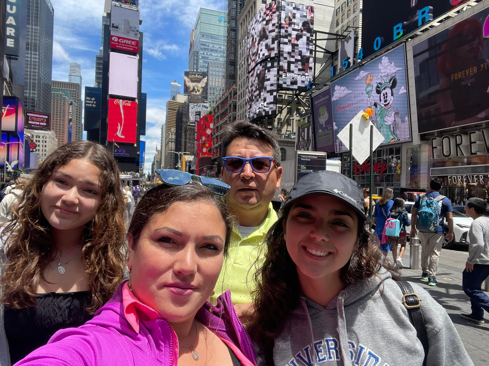

Camacho's Farms was founded during the COVID 19 pandemic
in March of 2020. When we first started, the 20 acres of
land that you see today was filled with tall grass and trash.
During the time of the pandemic, within the last two years we
have managed to clean this place up and now we are raising
alpacas. We have four alpacas: Beretha, Kiki, Duchess and her
baby Misti. We also have two dogs: Pluto and Goofy. To your
right you can see a picture of the family that started up this
business. You can click or tap on one of the family member's
faces to learn more about them.

(L-R): Gabriella, Gabriela, Hamilton, Elizabeth
Below we have provided a way you can schedule a time to visit the farm. We are open on Saturdays
and Sundays. If you prefer a weekday rather than the weekend you may either send us an email or you can
fill out the form below and we will contact you as soon as we can.